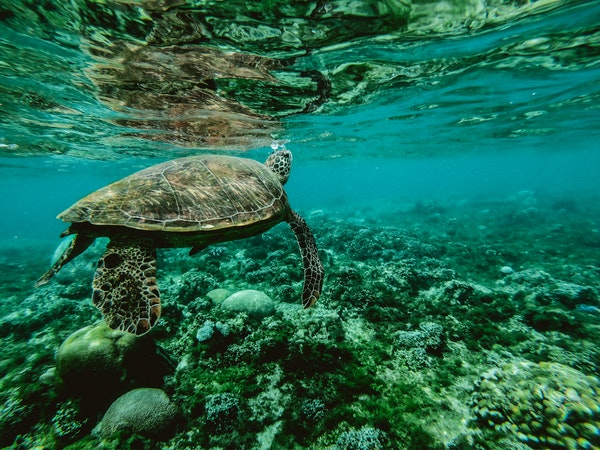
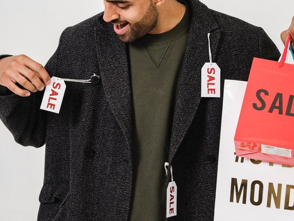

• UKFT The UK Fashion and Textiles Association, of all major trade bodies in the industry, including the British Fashion Council (of which Runway fashion was a founder member) and The Savile Row Bespoke Tailors Guild
• FDPA The Fashion & Design Protection Association (of which Runway fashion was a Founder Member)
• SEDEX The Supplier Ethical Data Exchange which is a nonprofit membership organization dedicated to driving improvements in responsible and ethical business practices in global supply chains.
 